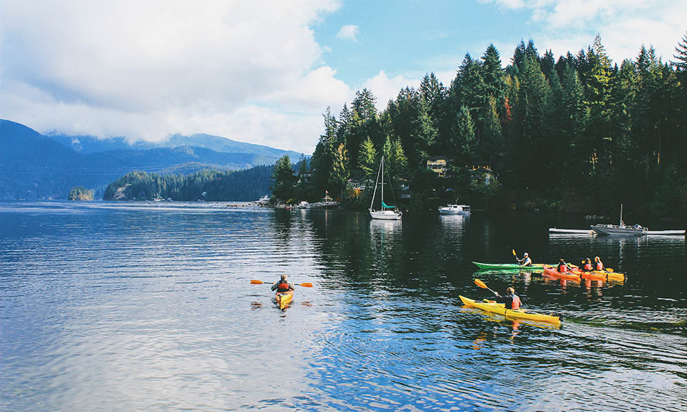

MOST INSTAGRAMMED HIKE IN VANCOUVER: Deep Cove
Recently I was trying to make a list of the most popular hikes in Vancouver. I asked friends for their opinion and did some googling, but then I had a better idea: Instagram! Tons of people location tag their photos when they go hiking and post them to Instagram. (I know I do!) So it’s a great way to figure out what hikes are most popular. I scrolled through a lot of hashtags before coming up with the most Instagrammed Hike in Vancouver. If you’re looking to up your ‘gram game this is the list you need. And if you like solitude, here is the top 1 hike you should avoid!
I had guessed the Garibaldi Lake would be the most popular, but I was wrong!
Trail info
It’s probably no surprise that the #Deep Cove is the most Instagrammed hike in Vancouver, with 48.8k hashtagged photos. It’s a rite of passage for most active Vancouverites and many people hike it weekly to stay in shape. It climbs steeply up through the forest on stairs and rocks. (In fact it is often called Mother Nature’s Stairmaster.) There are no views until you emerge from the trees just below the Grouse Mountain Lodge. You are not permitted to hike down the Grind. Instead you can pay $10 to take the gondola down (and save your knees!) You can find more information on VancouverTrails.com.
Stats
It’s a brutally steep 2.9km hike with over 800m of elevation gain. It takes most people 1.5 to 2 hours to hike. The fittest people run it in under an hour and the all-time record is just 25 minutes!
Where to Get the Shot
The viewpoint just below the lodge is a popular place for sweaty and triumphant selfies. There are also some cheeky motivational signs along the way that make cute photos. (The one that says “Legs, you got this!” is my fave.)
So there’s the list of the Top 10 Most Instagrammed Hikes in Vancouver as of early 2017. Were there any surprises on the list for you? Which ones did you guess right? Personally I’m surprised St. Mark’s Summit didn’t make the top 10.